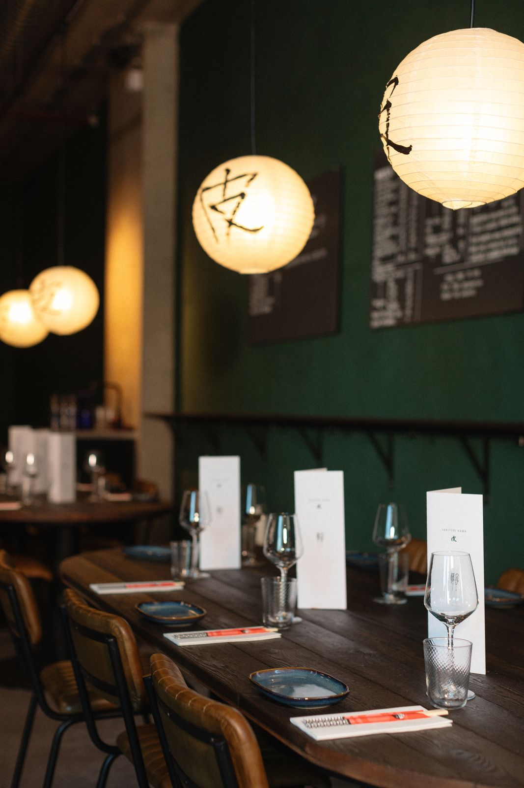
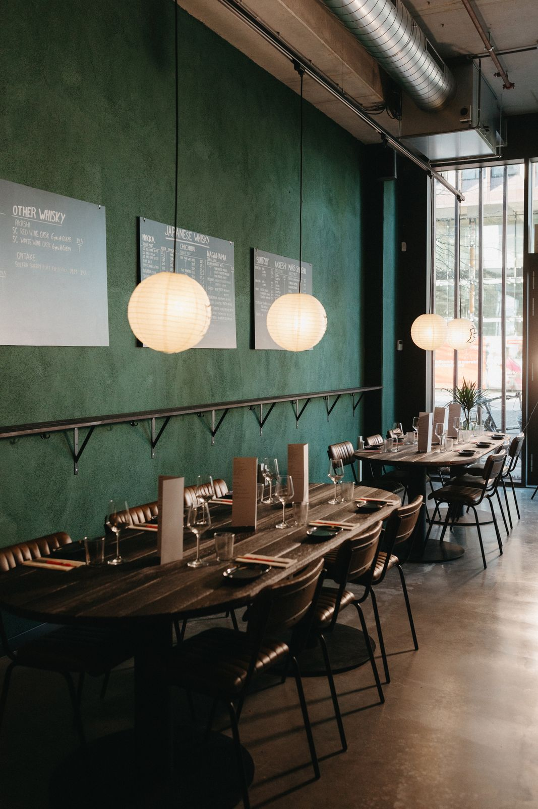
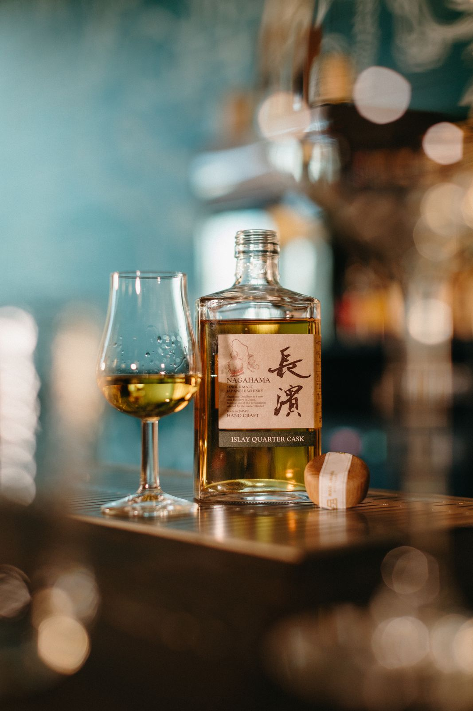
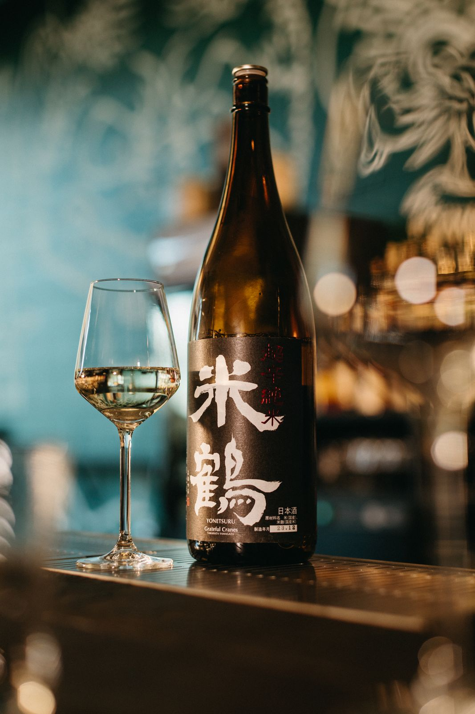

Izakaya aan de Jaarbeursboulevard, Utrecht
Yakitori van de binchotan. Whisky uit Japan.
Spiesjes gegrild op houtskool met taresaus, sake, Japanse bieren en een grote kast Japanse whisky. Tussen Utrecht Centraal en de Jaarbeurs.
Dinsdag t/m zaterdag 17:00 tot 23:00 keuken tot 21:30

Wat betekent Yakitori Kawa?
- Yaki
- gegrild
- Tori
- kip
- Kawa
- huid
Yakitori zijn spiesjes, bij ons traditioneel bereid op binchotan houtskool met een taresaus. Het menu past goed bij Japanse dranken: sake, wijnen, bieren en whisky, en daarnaast serveren we cocktails.
David van Ramhorst en Marcel van der Ben openden samen Yakitori Kawa aan de Jaarbeursboulevard 266. Midden in Utrecht, naast het Centraal Station en de Jaarbeurs: makkelijk voor een avond eten, een borrel na de beurs of een glas voor de trein.


Japanse whisky
Yakitori Kawa is gespecialiseerd in Japanse whisky. Het aanbod is groot, voor alle liefhebbers van whisky.
Van veel whisky's hebben we maar een beperkt aantal flessen, en de selectie wisselt steeds door nieuwe releases en flessen die op raken. Kijk daarom op het bord aan de muur voor wat er nu staat. Advies nodig of een vraag? We helpen je graag.
Liever gemengd? Probeer de Highball, de bekendste mixdrank van Japan, of een Old Fashioned of Whisky Sour met Japanse whisky.
Naar de cocktails
Groepen & besloten feesten
Yakitori Kawa is zeer geschikt voor grote groepen, zowel voor een borrel als voor diner.
Op zoek naar een locatie voor een besloten feest? Yakitori Kawa is af te huren. We hanteren geen huurprijs, alleen een omzetgarantie.
Wil je reserveren voor een groep groter dan 8 personen? Mail dan naar info@yakitorikawa.com.
Mail voor een groepOpeningstijden
| Maandag | Gesloten |
|---|---|
| Dinsdag t/m zaterdag | 17:00 – 23:00 |
| Zondag | Gesloten |
De keuken sluit om 21:30 uur.
Reserveer een tafelContact
Yakitori KawaJaarbeursboulevard 266
3521 BC Utrecht
Op een paar minuten lopen van Utrecht Centraal, naast de Jaarbeurs.
Plan je route